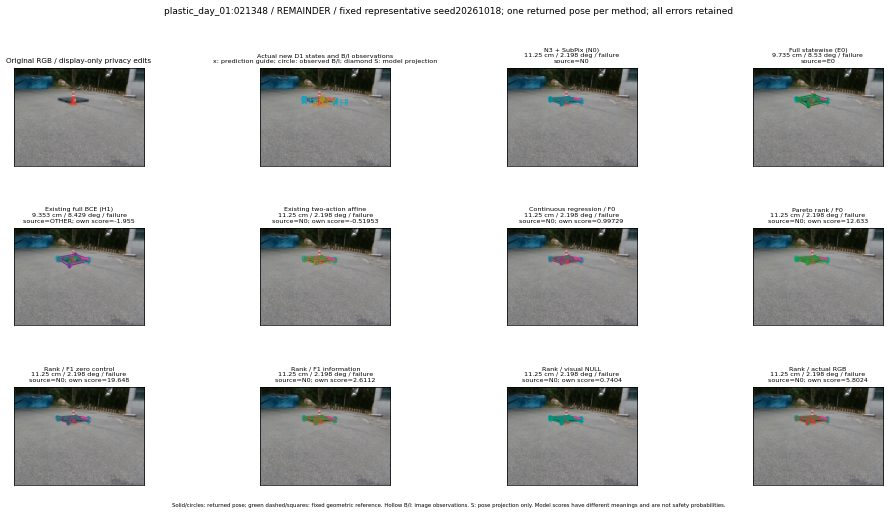

실선은 반환 자세, 초록 점선은 고정 기하 참조입니다. S는 영상 관측이 아닙니다. 점수는 모델별 의미가 다르며 보정된 안전 확률이 아닙니다. 개인정보 처리는 표시 사본에만 적용했습니다.
| 방법·seed | 위치 / 회전 / 공동성공 | 실제 출처 | 선택 후보 | 각 모델 자체 점수 |
|---|---|---|---|---|
| N0 | 11.25 cm / 2.198 deg / failure | N0 | N/A | N/A |
| E0 | 9.735 cm / 8.53 deg / failure | E0 | N/A | N/A |
| E0_REGENERATED | 9.735 cm / 8.53 deg / failure | E0 | E0_REGENERATED | N/A |
| POSEFIX_SUBPIX_PF_ANCHOR | 5.228 cm / 0.6947 deg / failure | OTHER | N/A | N/A |
| POSEFIX_SUBPIX_YOLO_ANCHOR | 5.228 cm / 0.6947 deg / failure | OTHER | N/A | N/A |
| D1_H1_MLP_s20261018 | 9.353 cm / 8.429 deg / failure | OTHER | G10/ORIGINAL_WD/selected | -1.955029845237732 |
| D1_H1_MLP_s20261019 | 9.353 cm / 8.429 deg / failure | OTHER | G10/ORIGINAL_WD/selected | -1.8680808544158936 |
| D1_H1_MLP_s20261020 | 3.234 cm / 0.796 deg / success | OTHER | P1/ORIGINAL_WD/selected | -2.307044267654419 |
| D1_H1_PAIR_MLP_s20261018 | 11.25 cm / 2.198 deg / failure | N0 | N0 | -1.6119829416275024 |
| D1_H1_PAIR_MLP_s20261019 | 11.25 cm / 2.198 deg / failure | N0 | N0 | -1.6833425760269165 |
| D1_H1_PAIR_MLP_s20261020 | 11.25 cm / 2.198 deg / failure | N0 | N0 | -1.7858777046203613 |
| D1_H1_PAIR_ROLE_AFFINE_s20261018 | 11.25 cm / 2.198 deg / failure | N0 | N0 | -0.5195287466049194 |
| D1_H1_PAIR_ROLE_AFFINE_s20261019 | 11.25 cm / 2.198 deg / failure | N0 | N0 | -0.5543419718742371 |
| D1_H1_PAIR_ROLE_AFFINE_s20261020 | 11.25 cm / 2.198 deg / failure | N0 | N0 | -0.520394504070282 |
| R_CONT_F0_s20261018 | 11.25 cm / 2.198 deg / failure | N0 | N0 | 0.9972931742668152 |
| R_CONT_F0_s20261019 | 11.25 cm / 2.198 deg / failure | N0 | N0 | 1.0621557235717773 |
| R_CONT_F0_s20261020 | 11.25 cm / 2.198 deg / failure | N0 | N0 | 0.9658927917480469 |
| R_ORDER_F0_s20261018 | 11.25 cm / 2.198 deg / failure | N0 | N0 | 12.633244514465332 |
| R_ORDER_F0_s20261019 | 11.25 cm / 2.198 deg / failure | N0 | N0 | 6.650190353393555 |
| R_ORDER_F0_s20261020 | 11.25 cm / 2.198 deg / failure | N0 | N0 | -3.2583959102630615 |
| R_ORDER_F1_ZERO_s20261018 | 11.25 cm / 2.198 deg / failure | N0 | N0 | 19.64830207824707 |
| R_ORDER_F1_ZERO_s20261019 | 11.25 cm / 2.198 deg / failure | N0 | N0 | 12.462963104248047 |
| R_ORDER_F1_ZERO_s20261020 | 11.25 cm / 2.198 deg / failure | N0 | N0 | 10.403450965881348 |
| R_ORDER_F1_s20261018 | 11.25 cm / 2.198 deg / failure | N0 | N0 | 2.6111762523651123 |
| R_ORDER_F1_s20261019 | 11.25 cm / 2.198 deg / failure | N0 | N0 | 5.182480812072754 |
| R_ORDER_F1_s20261020 | 11.25 cm / 2.198 deg / failure | N0 | N0 | 1.9524744749069214 |
| V_ORDER_NULL_s20261018 | 11.25 cm / 2.198 deg / failure | N0 | N0 | 0.7404007911682129 |
| V_ORDER_NULL_s20261019 | 11.25 cm / 2.198 deg / failure | N0 | N0 | 0.794727623462677 |
| V_ORDER_NULL_s20261020 | 11.25 cm / 2.198 deg / failure | N0 | N0 | 2.9875524044036865 |
| V_ORDER_RGB_s20261018 | 11.25 cm / 2.198 deg / failure | N0 | N0 | 5.802437782287598 |
| V_ORDER_RGB_s20261019 | 11.25 cm / 2.198 deg / failure | N0 | N0 | 0.7202291488647461 |
| V_ORDER_RGB_s20261020 | 11.25 cm / 2.198 deg / failure | N0 | N0 | -5.70639705657959 |